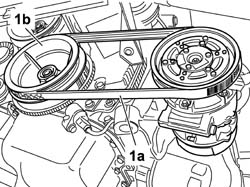
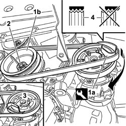

1092D10 AIR CONDITIONER COMPRESSOR DRIVE BELT - R + R
- Path
- Procedures > 10 ENGINE UNIT > 1092 VARIOUS ENGINE COMPONENT CONTROLS > 1092D AIR CONDITIONER COMPRESSOR DRIVE > 1092D10 AIR CONDITIONER COMPRESSOR DRIVE BELT - R + R
- Kind
- repair procedure (removal / refitting; the operation number is the code)
- Applies to
- all engines; all production periods
- Interactive page
- https://sloeber94.github.io/elrnDB-fMltpl/en/#/186003524
Applies to: engines: 1.6 16v; production: fino a 05/99, da 09/03, da 06/99 a 03/02, da 04/02 a 08/03, fino a 05/04
 Removing
Removing
 Refitting
Refitting- Position the vehicle on the lift.
- Raise the vehicle.
Op. 4450B04 RIGHT FRONT WHEEL R R
Op. 7055B64 LH OR RH REFLECTOR(ONE) ON REAR BUMPERS - R R
1. Release the compressor flexible drive belt (1a) rotating the auxiliary units drive pulley (1b) and, at the same time, applying leverage to the actual belt taking particular care not to damage the components involved in the removal.

Applies to: engines: 1.6 16v; production: fino a 05/99, da 09/03, da 06/99 a 03/02, da 04/02 a 08/03, fino a 05/04
Refitting
Removing1. Position the tool (1a), fitted with the new flexible drive belt, on the compressor pulley, then fit the belt on the auxiliary unit drive pulley (1b) and on the tool.
2. Rotate the auxiliary units drive pulley through about 180° acting on the fixing nut and, at the same time, fit the belt on the compressor drive pulley.
3. Once the flexible belt is fitted, extract the tool.
4. Check that the belt is correctly fitted on all the pulley teeth.
- The flexible structure of the compressor drive belt guarantees the correct tensioning of the actual belt.

Applies to: engines: 1.6 16v; production: fino a 05/99, da 09/03, da 06/99 a 03/02, da 04/02 a 08/03, fino a 05/04
Op. 7055B64 LH OR RH REFLECTOR(ONE) ON REAR BUMPERS - R R
Op. 4450B04 RIGHT FRONT WHEEL R R
- Lower the vehicle on the lift.
- Remove the vehicle from the lift.
Applies to: all engines; production: da 06/04
Removing
Refitting- Position the vehicle on the lift.
- Raise the vehicle.
- Op. 4450B04 RIGHT FRONT WHEEL R R
- Op. 7055B64 LH OR RH REFLECTOR(ONE) ON REAR BUMPERS - R R
- Release the compressor flexible drive belt (1a) rotating the auxiliary units drive pulley (1b) and, at the same time, using leverage on the actual belt taking special care not to damage the components involved in the removal.
Applies to: all engines; production: da 06/04
Refitting
Removing- Position the tool (1a) supplied with the new flexible belt on the compressor pulley, then fit the belt on the auxiliary units drive pulley (1b) and on the tool.
- Rotate the auxiliary units drive pulley through around 180° using the fixing nut and, at the same time, fit the belt on the compressor drive pulley.
- Once the flexible belt has been fitted, extract the tool.
- Check that the belt is correctly fitted on all the pulley teeth.
- The flexible structure of the compressor drive belt ensures the correct tensioning of the actual belt.
Applies to: all engines; production: da 06/04
- Op. 7055B64 LH OR RH REFLECTOR(ONE) ON REAR BUMPERS - R R
- Op. 4450B04 RIGHT FRONT WHEEL R R
- Lower the vehicle on the lift.
- Remove the vehicle from the lift.